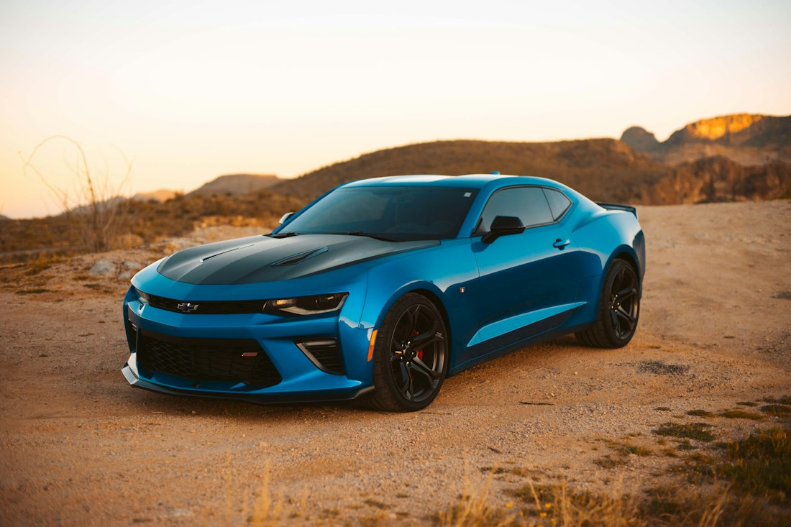
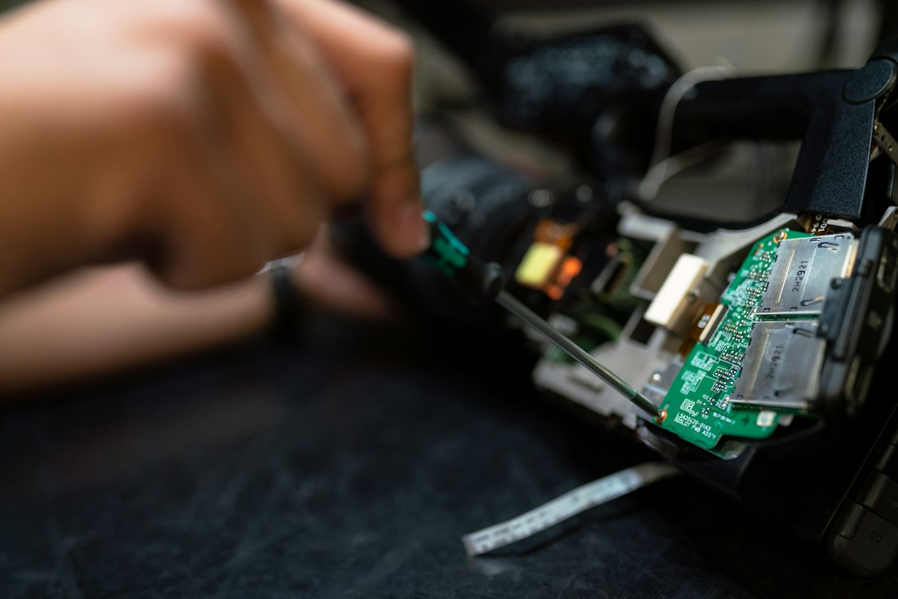
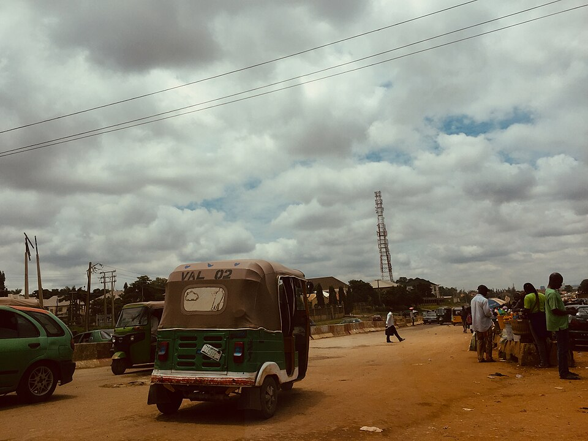
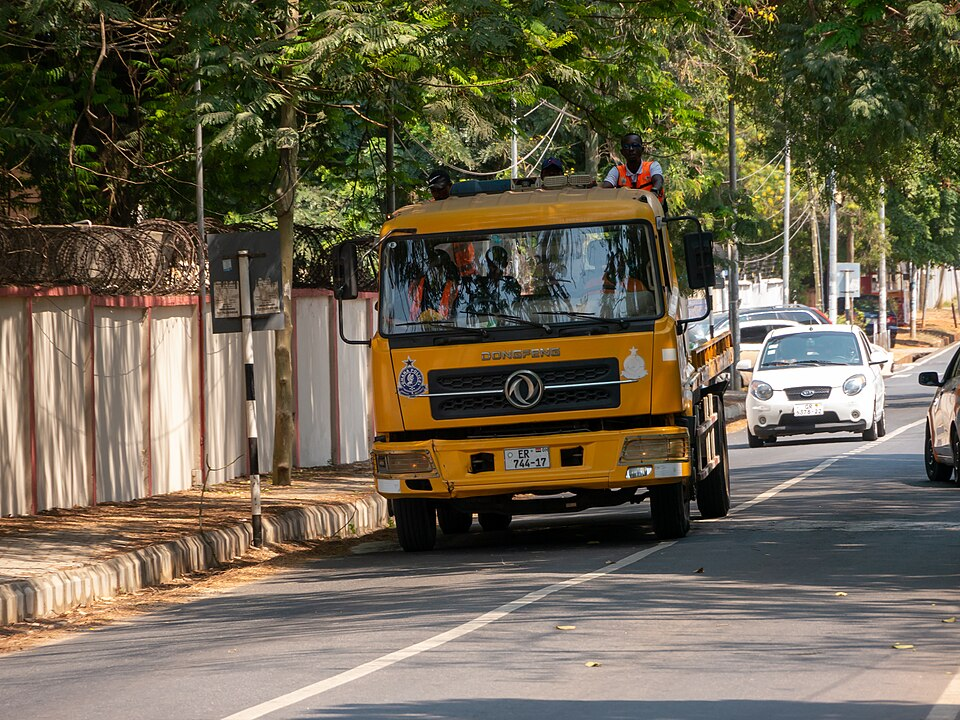

Car GPS Tracking
Vehicle tracking solutions for private car owners who want better awareness of their vehicle's location and additional security support.
Enquire on WhatsAppWhat we offer
Explore vehicle tracking and security solutions for cars, motorcycles, tricycles and commercial vehicles, alongside professional tracker installation and vehicle recovery support.
Get a QuoteOur services
Discover the tracking and vehicle security services offered by SAM DE TRACKER.

Vehicle tracking solutions for private car owners who want better awareness of their vehicle's location and additional security support.
Enquire on WhatsAppTracking solutions for motorcycle owners looking to monitor and improve the security of their motorcycles.
Enquire on WhatsApp
Professional installation and setup of vehicle tracking devices to help customers get started with their tracking solutions.
Enquire on WhatsApp
Vehicle tracking solutions for tricycle owners and operators who want better awareness of their vehicles.
Enquire on WhatsAppTracking solutions for trucks and commercial vehicle owners seeking better vehicle monitoring and security awareness.
Enquire on WhatsApp
Vehicle recovery support through tracking solutions designed to assist with locating vehicles when they are stolen.
Enquire on WhatsAppHow it works
Contact SAM DE TRACKER to express your interest in vehicle tracking or security solutions.
Explain your vehicle type and what you want to achieve.
Discuss the available option that best suits your needs.
Proceed with the agreed installation and receive guidance on the solution.
The value of tracking
Vehicle tracking can offer useful awareness and support for vehicle owners. The right option depends on your vehicle and needs.
Frequently asked questions
For more information about a particular vehicle or service, speak with our team.
Call +234 708 517 0538We can discuss tracking solutions for cars, motorcycles, tricycles, trucks and other commercial vehicles. Contact us to discuss your vehicle.
GPS tracker installation and setup is available. Contact us to discuss your vehicle and the installation you need.
Call +234 708 517 0538 or message us on WhatsApp with your vehicle type and what you are looking for.
Tracking solutions may assist with locating a vehicle, but recovery is not guaranteed. Contact us to discuss available support.
Call +234 708 517 0538 or start a conversation on WhatsApp using the contact links on this page.
Talk to our team
Get in touch with SAM DE TRACKER to discuss your vehicle tracking and security needs.
+234 708 517 0538